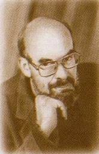
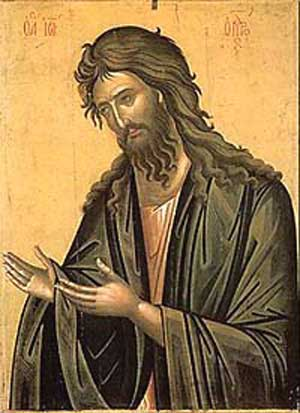
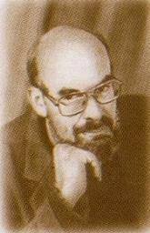

11 09 2011 (2071 день 20 часов назад)
О мученической кончине святого Иоанна Крестителя
После Крещения Господня святой Иоанн Креститель был заключен в темницу Иродом Антипой, четвертовластником, правителем Галилеи. (После смерти Ирода Великого римляне разделили территорию Палестины на четыре части и в каждой части поставили правителем своего ставленника. Ирод Антипа получил от императора Августа в управление Галилею). Пророк Божий открыто обличал Ирода за то, что, оставив законную жену, дочь аравийского царя Арефы, он беззаконно сожительствовал с Иродиадой, женой своего брата Филиппа (Лк. 3, 19, 20). В день своего рождения Ирод устроил пир вельможам, старейшинам и тысяченачальникам. Дочь Иродиады Саломия плясала перед гостями и угодила Ироду. В благодарность девице он поклялся дать все, чего она ни попросит, даже до половины своего царства. Скверная танцовщица по совету своей злобной матери Иродиады просила дать ей тотчас же на блюде голову Иоанна Крестителя. Ирод опечалился. Он боялся гнева Божия за убийство пророка, которого сам раньше слушался. Боялся он и народа, который любил святого Предтечу. Но из-за гостей и неосторожной клятвы он повелел отрубить голову святому Иоанну и отдать Саломии. По преданию, уста мертвой главы проповедника покаяния еще раз открылись и произнесли: «Ирод, не должно тебе иметь жену Филиппа, брата твоего». Саломия взяла блюдо с главой святого Иоанна и отнесла своей матери. Неистовая Иродиада исколола язык пророка иглой и закопала его святую главу в нечистом месте. Но благочестивая Иоанна, жена домоправителя Иродова Хузы, погребла святую голову Иоанна Крестителя в глиняном сосуде на горе Елеонской, где у Ирода был собственный участок земли (обретение честной главы празднуется 24 февраля). Святое тело Иоанна Крестителя взяли в ту же ночь его ученики и погребли в Севастии, там, где совершилось злодеяние.
Суд Божий совершился над Иродом, Иродиадой и Саломией еще при их земной жизни. Саломия, переходя зимой реку Сикорис, провалилась под лед. Лед сдавил ее так, что она висела телом в воде, а голова ее находилась надо льдом. Подобно тому, как она некогда плясала ногами по земле, теперь она, словно пляшущая, производила беспомощные движения в ледяной воде. Так она висела до тех пор, пока острый лед не перерезал ее шеи. Труп ее не был найден, а голову принесли Ироду с Иродиадой, как некогда принесли им главу святого Иоанна Предтечи. Аравийский царь Арефа в отмщение за бесчестие своей дочери двинул войско против Ирода. Потерпев поражение, Ирод подвергся гневу римского императора Кая Калигулы (37–41) и был вместе с Иродиадой сослан в заточение в Галлию, а потом в Испанию. Там они были поглощены разверзшейся землей.
В память усекновения главы святого Иоанна Крестителя Церковью установлен праздник и строгий пост как выражение скорби христиан о насильственной смерти великого Пророка.
В памяти Воронову Ю.Н.


После Крещения Господня святой Иоанн Креститель был заключен в темницу Иродом Антипой, четвертовластником, правителем Галилеи. (После смерти Ирода Великого римляне разделили территорию Палестины на четыре части и в каждой части поставили правителем своего ставленника. Ирод Антипа получил от императора Августа в управление Галилею). Пророк Божий открыто обличал Ирода за то, что, оставив законную жену, дочь аравийского царя Арефы, он беззаконно сожительствовал с Иродиадой, женой своего брата Филиппа (Лк. 3, 19, 20). В день своего рождения Ирод устроил пир вельможам, старейшинам и тысяченачальникам. Дочь Иродиады Саломия плясала перед гостями и угодила Ироду. В благодарность девице он поклялся дать все, чего она ни попросит, даже до половины своего царства. Скверная танцовщица по совету своей злобной матери Иродиады просила дать ей тотчас же на блюде голову Иоанна Крестителя. Ирод опечалился. Он боялся гнева Божия за убийство пророка, которого сам раньше слушался. Боялся он и народа, который любил святого Предтечу. Но из-за гостей и неосторожной клятвы он повелел отрубить голову святому Иоанну и отдать Саломии. По преданию, уста мертвой главы проповедника покаяния еще раз открылись и произнесли: «Ирод, не должно тебе иметь жену Филиппа, брата твоего». Саломия взяла блюдо с главой святого Иоанна и отнесла своей матери. Неистовая Иродиада исколола язык пророка иглой и закопала его святую главу в нечистом месте. Но благочестивая Иоанна, жена домоправителя Иродова Хузы, погребла святую голову Иоанна Крестителя в глиняном сосуде на горе Елеонской, где у Ирода был собственный участок земли (обретение честной главы празднуется 24 февраля). Святое тело Иоанна Крестителя взяли в ту же ночь его ученики и погребли в Севастии, там, где совершилось злодеяние.
Суд Божий совершился над Иродом, Иродиадой и Саломией еще при их земной жизни. Саломия, переходя зимой реку Сикорис, провалилась под лед. Лед сдавил ее так, что она висела телом в воде, а голова ее находилась надо льдом. Подобно тому, как она некогда плясала ногами по земле, теперь она, словно пляшущая, производила беспомощные движения в ледяной воде. Так она висела до тех пор, пока острый лед не перерезал ее шеи. Труп ее не был найден, а голову принесли Ироду с Иродиадой, как некогда принесли им главу святого Иоанна Предтечи. Аравийский царь Арефа в отмщение за бесчестие своей дочери двинул войско против Ирода. Потерпев поражение, Ирод подвергся гневу римского императора Кая Калигулы (37–41) и был вместе с Иродиадой сослан в заточение в Галлию, а потом в Испанию. Там они были поглощены разверзшейся землей.
В память усекновения главы святого Иоанна Крестителя Церковью установлен праздник и строгий пост как выражение скорби христиан о насильственной смерти великого Пророка.
В памяти Воронову Ю.Н.

Сегодня в день памяти св. Ионна Крестителя Абазия чтит память выдающегося ученого-кавказоведа, государственного и общественного деятеля, одного из лидеров национально-освободительного движения абхазского народа, кавалера главного гражданского ордена Республики Абхазия – «Ахьдз-Апша» I степени (посмертно).
Неоценимый вклад в историю древней Абхазии-
Книга Ю. Н. Воронова посвящена одному из новейших открытий советской археологии. Планомерные раскопки памятников цебельдинской культуры Абхазии начались в 1960 г. Первые достаточно полные публикации появились в 1970—1971 гг. Историк 3. В. Анчабадзе, автор вышедшей в Сухуми в 1959 г. книги «Из истории средневековой Абхазии (VI—XVII вв.)», располагал только отрывочными данными письменных источников. Последующие работы археологов В. Л. Леквинадзе, М. М. Трапша, Г. К. Шамбы, М. М. Гунбы уже раскрыли отдельные детали интереснейшей картины. Но нарисовать цельный образ забытой цивилизации Цебельдинской долины, древней Апсилии, удалось только Ю. Н. Воронову.
11 сентября 1995 года в городе Сухуме был злодейски убит крупный ученый-кавказовед, общественный деятель, вице-премьер Республики Абхазия Юрий Николаевич Воронов.
Юрий Николаевич родился 8 мая 1941 года в Абхазии, в селе Цебель-да. Семья его принадлежала к старинному русскому дворянскому роду. В конце 19 века за участие в революционной деятельности их предки были высланы на Кавказ. Там, недалеко от Цебельды, они получили землю и создали имение «Ясочка». Несколько поколений Вороновых занимались изучением Кавказа. Роль их трудов и в науке, и в просвещении абхазского народа огромна.
С детства окруженный живой историей, видевший многочисленные памятники древнего народа, воспитанный в высоко культурной семье, Юрий рано был вовлечен в археологические поиски. И после окончания средней школы, решив отдать себя служению этой науке, поступает на Восточный факультет Ленинградского университета. После завершения образования, в 1965 году, он возвращается в родную Абхазию и посвящает ей всю оставшуюся жизнь.
Как ученый он сформировался, в первую очередь, под влиянием замечательного археолога Л.Н. Соловьева, биографию которого он составил в одной из своих последних книг.
Исследования профессора Ю.Н. Воронова внесли огромный вклад в изучение Абхазии, начиная с каменного века и вплоть до позднего средневековья, много у него трудов и по истории абхазского народа, самобытность которого он всегда отстаивал.
Юрий Николаевич был редким для нашего времени ученым, имевшим мужество отстаивать честную науку, с исключительной принципиальностью бороться с политизацией и национализмом в науке. Даже оставаясь в почти полном одиночестве, он никогда не принимал предвзятых теорий, создаваемых в угоду сильным мира сего.
Истинно русский человек и любящий сын своей республики, Воронов очень болезненно воспринимал разрушение памятников истории и культуры, и ему принадлежат огромные заслуги в сохранении культурного наследия Абхазии, чем он занимался постоянно, не жалея ни сил, ни здоровья, ни времени, ни собственных средств. При этом он обладал огромной работоспособностью, исключительной энергией, сильной волей, редким умом и богатой наследственной культурой. Надо еще добавить, что Юрий Николаевич был человеком чрезвычайно добрым и обаятельным, остроумным собеседником, а потому привлекал к себе и своим идеям сердца множества людей.
Стремясь стать выше политических амбиций и национальных споров, Ю.Н. Воронов горячо содействовал сохранению и развитию дружественных связей народов России и Абхазии. Являясь видным кавказоведом, он отчетливо понимал значение России для Кавказа и Кавказа для России. К тому же, он был активным ор ганизатором. Поэтому, совершенно естественно, профессора избрали председателем русской национальной общины в Абхазии. И здесь, на стыке довольно сложных отношений, да еще в последние труднейшие годы, он был незаменим.
Его последняя книга — «Боль моя, Абхазия» — сборник научно-публицистических выступлений, наполненных любовью к людям и культуре этого древнего края.
Поистине, он был необычайным человеком, миротворцем, его хорошо знали, уважали и любили в республике повсеместно, и русские и абхазцы, «...добро было следом его пути». И за свое неизменное стремление к добру он пал жертвой низменного заговора.
Но невинно пролитая кровь даст новые всходы праведности и не вопиет о мщении: «есть Высший Судия», который призывает человека в лучший для него момент, и Сам воздаст каждому по заслугам. И в этой жизни, и в вечности.
Теперь, после смерти Юрия Николаевича, так необычно и провидчески звучат слова из его автобиографической заметки (лето 1995 г.): «Большая часть жизни профессора Ю.Н.Воронова прошла в светлом мире увлечений красотой окружавших его природы и людей. Будучи счастливым мучеником своих идей, он постоянно стремился построить что-то вечное и поделиться своими находками с ближним. Это свойство его души притягивало к нему внимание множества людей — не только добромудрых служителей истины и справедливости и просто любопытных, но и одержимых духом потребления и разрушения. Поэтому он всю свою творческую жизнь провел на кладбищах, среди развалин и чужих очагов».
Удивительный человек жил среди нас и ушел мученической смертью. Верим, что там, за гробом, он обрел то вечное, к построению которого стремился всю свою недлинную земную жизнь.
http://apsnyteka.narod2.ru/v/bol_moya_abhaziya/index.html
http://www.kadashi.ru/mb/1/voronov.html